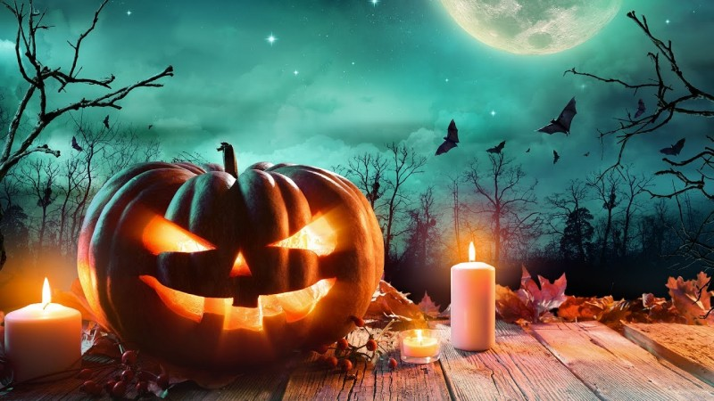
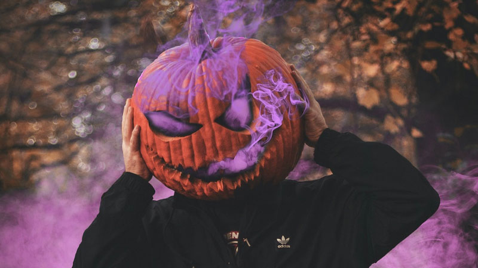

Lễ hội Halloween là lễ hội độc đáo mặc dù mới xuất hiện ở Việt Nam nhưng mỗi năm đều có rất nhiều người tham gia. Tuy nhiên, không phải ai cũng biết về nguồn gốc, ý nghĩa của lễ hội này.
Nếu như bạn đã từng tham gia lễ hội lễ Halloween thì bạn sẽ thấy 1 trong những hình ảnh sau cực kỳ quen thuộc đó có thể là: những trái bí ngô được khắc hình thù kỳ lạ, ma quái, những ánh đèn đủ màu sắc nhảy nhót trong trái bí ngô tựa như chiếc đèn lồng kỳ dị, hình mặt nạ ma quỷ… đó chính là đặc điểm nổi bật của lễ hội Halloween.
Halloween là gì? Halloween là ngày nào?
Halloween là ngày nào? Halloween (hay Hóa Lộ Quỉ) là lễ hội được tổ chức vào thứ 3, ngày 31/10/2023. Ý nghĩa của Halloween là tri ân người đã mất, đối với giới trẻ ngày này được coi như một ngày tết, một lễ hội vui nhất trong năm nó mang trong mình sự kỳ bí và sức hấp dẫn.
Halloween là sự pha trộn giữa những nghi lễ tôn giáo và tập tục cổ xưa của nhiều nền văn hóa khác nhau. Trong những ngày diễn ra lễ hội, mọi người đua nhau trang trí những hình nộm: phù thủy, mèo đen, bí ngô lập lòe ma quái; hóa trang, mặt nạ, tạo hình nộm….Năm nay 2023, Halloween rơi vào Thứ Ba.
Halloween vốn là lễ hội có nguồn gốc từ các nước phương Tây. Từ "Halloween" bắt nguồn từ nhà thờ Thiên chúa giáo, là dấu vết còn lại của lễ hội All Hallow Eve (lễ thánh). Ngày 1/11 là ngày lễ của người Thiên chúa bày tỏ lòng thành trước thánh thần.
Tuy nhiên vào thời của người Celtic thì mùa màng kết thúc vào ngày 31/10 ngày hội Halloween được gọi là ngày lễ Samhain (gieo trồng) đó là ngày 1/11. Bởi theo họ: vào thời gian này vị thần của mùa xuân và mùa hè không còn ngự trị và nhường chỗ cho thần Chết. Khi linh hồn của người chết quay trở lại nhà người thân để xin thức ăn và nước uống, các xác chết đi lại tự do.
Theo người xưa kể lại, vào ngày lễ Samhain linh hồn của người chết trong năm trước sẽ tìm đến một thể xác khác để bắt đầu cuộc sống mới trong năm tiếp theo. Tuy nhiên, người sống không muốn linh hồn người chết nhập vào mình, vì thế vào ngày 31/10 dân làng dập tắt lửa trong nhà để làm cho nhà cửa lạnh lẽo và tẻ ngắt. Sau đó con người hóa trang thành ma cà rồng hay những hình thù kỳ quái để xua đuổi những hồn ma tìm thể xác.
